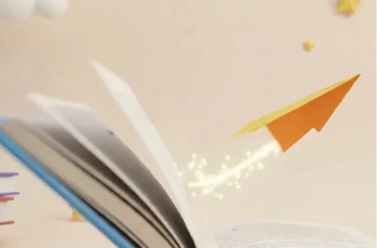

TỪ TRANG GIẤY ĐẾN NHỮNG CHÂN TRỜI02 — CÂU CHUYỆN CÁNH GIẤY
Nhỏ như trang giấy.
Rộng như ước mơ.
Một cuốn sách mở ra. Một chiếc máy bay giấy cất cánh. Và một thế giới mới bắt đầu.
Cánh Giấy được xây dựng từ niềm tin giản dị: khi trẻ tìm thấy niềm vui trong từng trang sách, trí tưởng tượng sẽ tự tìm được đôi cánh của mình.
01 Nuôi dưỡng sự tò mò02 Đánh thức trí tưởng tượng03 Kết nối bằng yêu thương